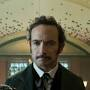
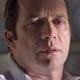
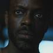

Personajes
-
Takeshi Kovacs
Es un exsoldado de élite conocido como "Envoy". Es el protagonista de la serie y es revivido en un nuevo cuerpo para investigar el asesinato de un millonario.
-
Reileen Kawahara
Es la hermana de Takeshi Kovacs y juega un papel importante en su historia. Su relación es compleja y está marcada por traiciones y secretos.
-
Kristin Ortega
Es una detective de la policía que investiga el asesinato de Bancroft. Se convierte en aliada de Kovacs y tiene una relación romántica con él.
-

Poe
Es un hotelero y un programa de inteligencia artificial que ayuda a Kovacs en su investigación. Tiene una personalidad única y se preocupa por el bienestar de sus huéspedes.
-
Lizzie Elliot
Es una mujer que fue víctima de un experimento de transferencia de conciencia. Su historia está llena de dolor y lucha por recuperar su identidad.
-

Laurens Bancroft
Es un millonario que contrata a Kovacs para investigar su propio asesinato. Es un personaje enigmático y poderoso, con muchos secretos.
-
Quellcrist Falconer
Es una líder revolucionaria y figura clave en la historia de Kovacs. Su ideología y acciones influyen en el desarrollo de la trama.
-
Miriam Bancroft
Es la esposa de Laurens Bancroft y juega un papel importante en la historia. Su relación con su esposo es complicada y está llena de tensiones.
-

Vernon Elliot
Es un exsoldado y amigo de Kovacs. Su historia está marcada por la lucha contra la opresión y la búsqueda de justicia.